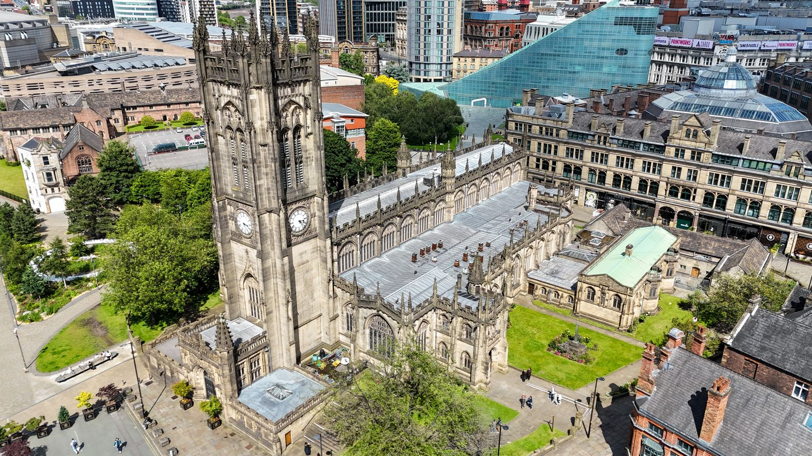

Destination Guide
Manchester
Red-brick history, a legendary football rivalry, and the sound that never left Madchester.
Best time to go
May–September
Fly into
Manchester Airport (MAN)
Currency
British Pound (GBP)
Suggested stay
3–4 days
Plan This Trip
Search flights and hotels for Manchester right here — no extra tabs.
Prefer another search engine? Kiwi.com →
Why go
Manchester built the modern world's factories, then its guitar music, and it still moves at that same restless pace. This is the city that gave football its most famous local rivalry, gave the world Joy Division, The Smiths and Oasis, and turned its Victorian warehouses into some of the best independent bars, restaurants and galleries in the country. It's compact enough to cover most of the highlights in a long weekend, well connected by direct flights from across Europe and beyond, and dense with free museums for whenever the weather turns — which, this being Manchester, it will.


Where to Stay
Manchester's compact centre means you're rarely more than a short walk or tram ride from the main sights, whichever area you pick.

Kimpton Clocktower
A former Victorian insurance headquarters turned grand hotel, with a domed atrium lobby that's worth seeing even if you're not staying.

The Edwardian Manchester
City-centre rooms with skyline views over the Town Hall and Cathedral — a solid, central base for a first visit.

Dakota Manchester
Sleek and modern, with a moodier design aesthetic than the city's Victorian grand hotels — good if you want contemporary over historic.
Flying in early or out late? The Radisson Blu at the airport puts you steps from the terminal with runway views from the room.
Museums & Culture
Nearly all of Manchester's major museums are free to enter, and most sit within a 15-minute walk of Deansgate.
The Manchester Museum
Natural history, ancient Egypt, and a living vivarium of frogs and reptiles, all inside a Gothic Revival building on Oxford Road.
Science and Industry Museum
Housed in the world's oldest surviving railway station — working steam engines and the original cotton-mill machinery that powered the city.
John Rylands Library
A neo-Gothic cathedral of a library on Deansgate — free to visit, and one of the most photographed interiors in the city.

National Football Museum
The story of English football under one roof, from Victorian leather balls to World Cup memorabilia — essential even for casual fans.

Museum of Illusions
Mirror rooms and optical-illusion exhibits built for photos — a good rainy-afternoon option with kids.
Manchester Art Gallery
A strong Pre-Raphaelite collection in a grand neoclassical building on Mosley Street, free to enter.
Football City

Etihad Stadium & Old Trafford
Manchester is the only city with two Premier League giants a few miles apart: Manchester City's Etihad Stadium in the east, and Manchester United's Old Trafford — the 74,000-seat "Theatre of Dreams" — to the west. Both run stadium tours year-round, and matchday tickets for either club sell out fast, so book well ahead.
Where to Eat & Drink
Manchester's food scene has grown well past its old reputation — expect everything from plant-filled rooftop dining to no-nonsense steakhouses.

The Ivy
A jungle-green, plant-filled dining room and bar in the heart of the city — reliably good for brunch or a long lunch.

El Gato Negro
Modern Spanish tapas over exposed brick and red leather booths — one of the city's most consistently well-reviewed restaurants.

Flat Iron
No-frills, good-value steak done well — a reliable pick when you don't want to overthink dinner.
Getting There


Manchester Airport (MAN)
The UK's third-busiest airport and the largest outside London, with direct flights across Europe, North America, the Middle East and Asia. A train station sits right beneath the terminals, with a direct service into the city centre in around 20 minutes.
A Simple 3-Day Route
Day 1
Cathedral & Libraries
Manchester Cathedral and John Rylands Library in the morning, Manchester Art Gallery in the afternoon.
Day 2
Football & Industry
A stadium tour at Old Trafford or the Etihad, then the Science and Industry Museum in the afternoon.
Day 3
Museums & a Night Out
The Manchester Museum and National Football Museum by day, dinner at El Gato Negro or The Ivy in the evening.
Good to Know
Getting around
The Metrolink tram network and a compact city centre mean most visitors don't need a car for the whole trip.
Entry requirements
UK entry requirements vary by nationality — check the current visa rules for your passport before booking.
Weather
Rain is likely whatever the season — pack a proper waterproof rather than relying on an umbrella in the wind.
Start Planning Your Manchester Trip
Compare flights to Manchester Airport, and browse hotels across the city centre, in one place.